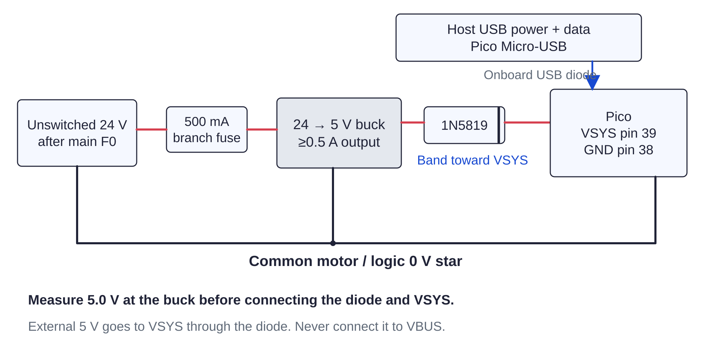

Controller / first power132 / 179
Check both supply paths
Measure logic first and motor voltage second. The buck must keep logic alive with USB absent; the stop must remove VM without removing logic.
AddNo new parts
Tools / setupVoltmeter · supported mechanism · motors disconnected

- USB only: meter 3V3 at every VIO node and HIGH at ENN. Firmware must remain inhibited.
- MOTOR POWER OFF: connect 24 V, verify buck near 5.0 V and Pico 3V3 stable. Unplug USB and verify 3V3 remains present.
- Reconnect USB; release STOP and turn MOTOR POWER ON. Meter switched VM near 24 V and GP27 near VM/11.
- Latch STOP. VM must fall while Pico 3V3 stays present. Turn MOTOR POWER OFF before resetting STOP.
Ready when
Logic persists on either supply path, motor VM appears only through relay NO, and GP27 stays below 3.3 V. Missing logic, unexpected VM or an overvoltage fails first power. Unplug 24 V and correct its source route before connecting motors.